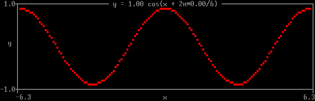

Quickstartdocs
Install:
pip install git+https://github.com/matomatical/matthewplotlib.git
Scatter plotsdocs
Import the library:
import matthewplotlib as mp
Construct a plot:
import numpy as np
xs = np.linspace(-2*np.pi, +2*np.pi, 156)
plot = mp.axes(
mp.scatter(
(xs, 1.0 * np.cos(xs), "red"),
(xs, 0.9 * np.cos(xs - 0.33 * np.pi), "magenta"),
(xs, 0.8 * np.cos(xs - 0.66 * np.pi), "blue"),
(xs, 0.7 * np.cos(xs - 1.00 * np.pi), "cyan"),
(xs, 0.8 * np.cos(xs - 1.33 * np.pi), "green"),
(xs, 0.9 * np.cos(xs - 1.66 * np.pi), "yellow"),
width=75,
height=10,
yrange=(-1,1),
),
title=" y = cos(x + 2πk/6) ",
xlabel="x",
ylabel="y",
)
Print to terminal:
print(plot)
Result:

Export to PNG image:
plot.saveimg("images/quickstart.png")
Result:

Animated scatter plotsdocs
Manual animation loop:
import time
import numpy as np
import matthewplotlib as mp
x = np.linspace(-2*np.pi, +2*np.pi, 150)
prev = None
while True:
# construct the new frame's data
k = (time.time() % 3) * 2
A = 0.85 + 0.15 * np.cos(2*np.pi*k/6)
y = A * np.cos(x - 2*np.pi*k/6)
c = mp.rainbow(1-k/6)
# construct the new frame's plot
plot = mp.axes(
mp.scatter(
(x, y, c),
width=75,
height=10,
yrange=(-1,1),
),
title=f" y = {A:.2f} cos(x + 2π*{k:.2f}/6) ",
xlabel="x",
ylabel="y",
)
# print a string that overwrites the old plot with new
print(plot - prev)
prev = plot
time.sleep(1/20)
Result:

Alternatively, you can use the animation context manager:
import time
import numpy as np
import matthewplotlib as mp
x = np.linspace(-2*np.pi, +2*np.pi, 150)
with mp.animate(fps=20) as anim: # <- manages timing, printing
while True:
# construct the new frame's data
k = (time.time() % 3) * 2
A = 0.85 + 0.15 * np.cos(2*np.pi*k/6)
y = A * np.cos(x - 2*np.pi*k/6)
c = mp.rainbow(1-k/6)
# construct the new frame's plot
plot = mp.axes(
mp.scatter(
(x, y, c),
width=75,
height=10,
yrange=(-1,1),
),
title=f" y = {A:.2f} cos(x + 2π*{k:.2f}/6) ",
xlabel="x",
ylabel="y",
)
# update the animation
anim.update(plot)
Result:

Next stepsdocs
See the examples or API reference.